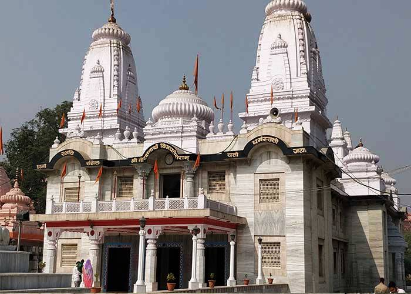

GORAKHPUR
Gorakhpur is a city located along the banks of Rapti river in the north-eastern part of the Indian state of Uttar Pradesh, with a population of 673,446. It is located near the Nepal border, 273 kilometres east of the state capital Lucknow. It is the administrative headquarters of Gorakhpur district and Gorakhpur division. The city is home to the Gorakhnath Math, a Gorakshanath temple.
Gorakhpur is famous as a religious centre: the city was home to Buddhist, Hindu, Jain and Sikh saints and is named after the medieval saint Gorakshanath. Gorakhnath Temple is still the seat of the Nath sect. The city is also home to many historic Buddhist sites and the Gita Press, a publisher of Hindu religious texts.
In the 20th century, Gorakhpur was a focal point in the Indian independence movement. Today, the city is also a business centre, hosting the headquarters of the North Eastern Railways www.nerailway.gov.in and an industrial area, GDA [Gorakhpur Development Authority] 15km from the old town.
CLIMATE
It experience pleasant environment throughout the year. In summer the average temperature can go as high as 40 'C and in during the winters the average temperature can go as low as 4 'C. The best time to visit Gorakhpur is during the months of October to March.
NEARBY TOURIST PLACES FOR VISIT:
Gorakhnath Temple
Gorakhpur takes its name from Gorakhnath, who was a saint and travelled widely across India and authored a number of texts that form a part of the canon of Nath Sampradaya. The Gorakhnath Math is a temple of the Nath monastic group of the Nath tradition. The Nath tradition was founded by guru Matsyendranath. This math is situated in Gorakhpur, Uttar Pradesh within a large premises. The temple performs various cultural and social activities and serves as the cultural hub of the city.
A shrine called Gorakhnath Mandir was built in his honour at the location. The musical Light and Sound Show in the evening is the main attraction these days. The temple performs various cultural and
social activities and serves as the cultural hub of the city.
Gorakhnath Temple is 4.5 kms away
from the Gorakhpur Railway Station. Local transport, auto, ,OLA, Taxi are easily available from railway station
Gorakhnath Temple is 11.4 kms away
from Madan Mohan Malaviya University Of Technology, Gorakhpur .
Local transport, auto, ,OLA, Taxi are easily available from Gorakhnath Teample To reach college.
For more detailed information for location of Madan Mohan Malaviya University Of Technology from Gorakhnath Temple.
Click here

Kushinagar
Kushinagar is a town in the Kushinagar district of the Indian state of Uttar Pradesh. It is an important Buddhist pilgrimage site, where Buddhists believe Gautama Buddha attained Parinirvana after his death. It is an international Buddhist pilgrimage centre.
The followers of Buddhism, especially from Asian countries, wish to visit this place at least once in their lifetime.
The road distance between Gorakhpur to Kushinagar is 51 km.
For more detailed information for location of Madan Mohan Malaviya University Of Technology from Kushinagar.
Click here
ODOP TERRACOTTA
Terracotta is a unique and special kind of ceramic craft. It is the term normally used for sculptures made in earthenware,
and also for various utilitarian products including vessels (notably flower pots), water and waste water pipes, roofing
tiles, bricks, and surface embellishment in building construction. Traditionally, what makes it different from other terracotta
crafts is that it involves ornamentation, use of natural colours / dyes and experimentation with innovative shapes. The raw material used for this
craft is a type of soil available locally. It gives the item a natural colour. Around 200 households are engaged in this work..

By Railway
Gorakhpur railway station connects to all major cities of India. It is the headquarter of North Eastern Railway. Direct trains connect it to Mumbai, Delhi, Kolkata, Lucknow, Kanpur, Varanasi and other cities.
Gorakhpur falls on NH 28 and 29. The roadways network connects Gorakhpur to the cities of Uttar Pradesh and to other cities of India. Some important distances are: Lucknow 276 km, Varanasi 231 km, Allahabad 339 km, Agra 624 km, Delhi 783 km and Mumbai 1690 km.
Situated on the basin of rivers Rapti and Rohini the geographical shape of the Gorakhpur City is of bowl. The west of the city is guarded by cool Rapti river while the east is associated with excel Sal Forest, giving the divine sense of peace with cool breeze every moment. The south is showered with the power of excellence, in shape of greenish Ramgarh Tal and north is the plinth of city's advancement.
Gorakhpur city has a university, a medical college, six engineering colleges, two pharmacy collages, two Management collages, one Dental collage and many post graduate and degree colleges. It is also the head quarters of North Eastern Railways. You can travel to any corner of India from here. No mean an achievement considering the size of the city. It also has an airport for domestic travel and connects with every major city in India. The city boasts of an army cantonment and an air base. All this, gave a cosmopolitan touch to the city. The world famous publication house of Gita Press gives an intellectual and religious touch to the city.
Direct Trains from all major Stations in India. Roadways (UP Government Bus) connectivity to major cities within the State, Nepal and Delhi. Flight to-from Lucknow, Varanasi and Delhi. Not reliable though as operators frequently stop / start operating on this route due commercial reasons. The airport is dedicated military airbase.
For Train Booking and Enquiry
By AIR
Gorakhpur civil airport is the nearest airport which is located around 8 kilometers away from the city centre. Direct flights from Gorakhpur airport ply to the cities like Delhi, Varanasi,
Lucknow and Kolkata and others. Primarily, the airport caters to Indian Air Force traffic but also operates civil aviation services.
One Can reach Gorakhpur by Air from New Delhi directly.
Daily flights are available from New Delhi to Gorakhpur.
Their numerous Flights like Air India, Spice Jet ,IndiGo etc are available from Delhi to Gorakhpur.
For Flight Booking and Enquiry
By Road
There are numbers of buses which provide regular services to different cities including
Kushinagar (50 km), Varansi (235 km), Lucknow (276 km) and Allahabad (339 km). Both state
owned and private buses are there which you can take to reach the desired destination. Direct buses from Gorakhpur to Lucknowand other cities are easily available.
Transport Facilities in Gorakhpur
Taxicabs can also be hired for a fixed time duration as desired by the user.
Cycle Rickshaw, a three wheeled human powered cycle, is the major mode of transport in the city. The charges are nominal and can be bargained. Usually a ride of 1-1.5 km would cost around 20 Rupees. City bus are available for some important routes of city.
Auto Rickshaws are easily available for traveling to some parts in the city.
Copyright © 2021,All Rights Reserved, Madan Mohan Malaviya University of Technology, Gorakhpur